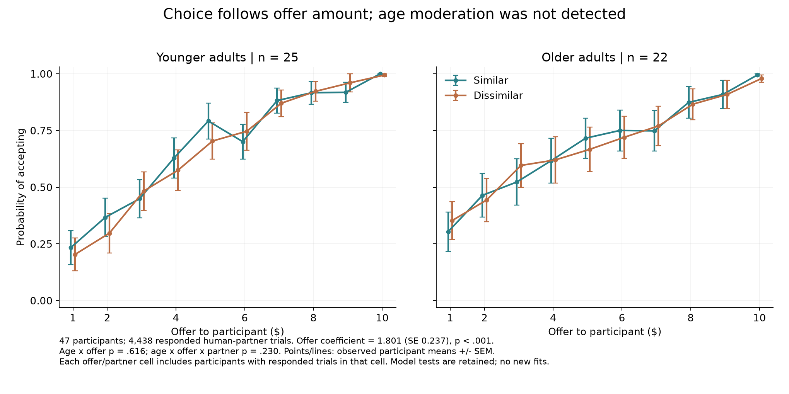
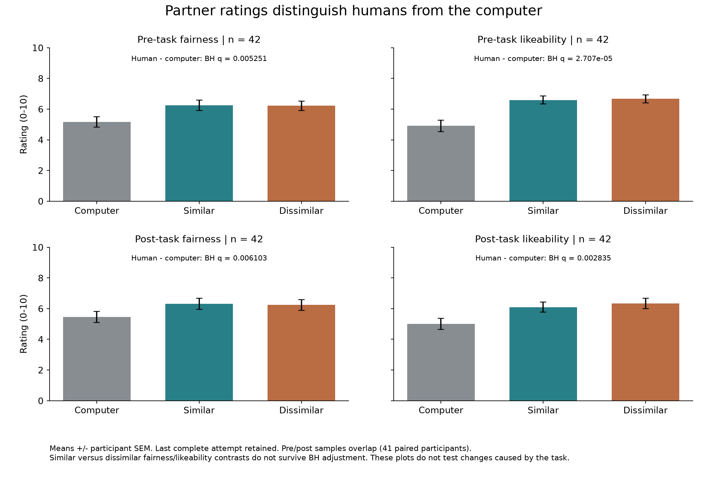
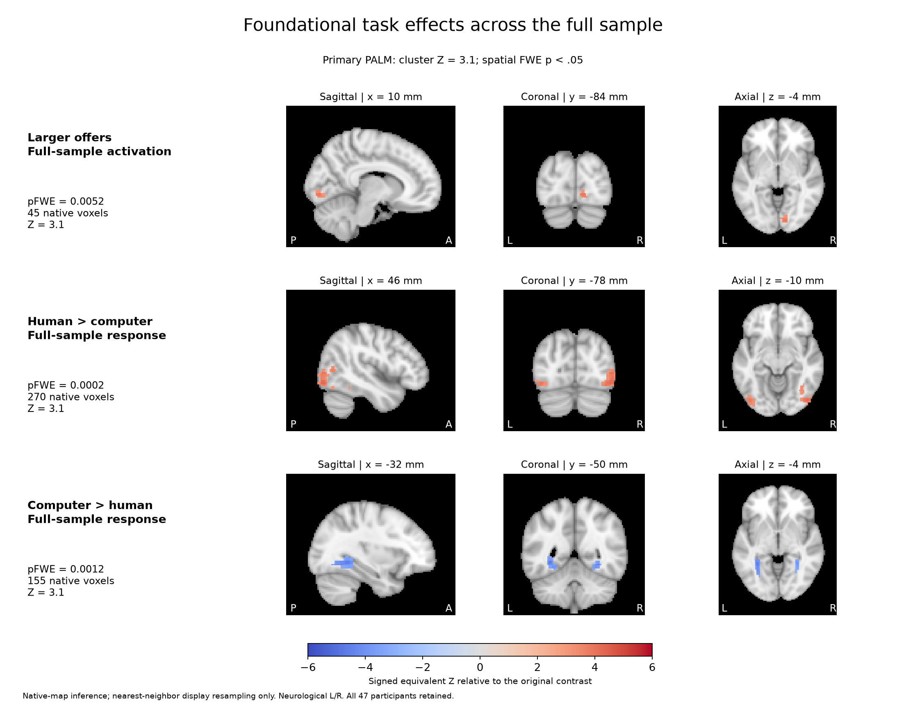
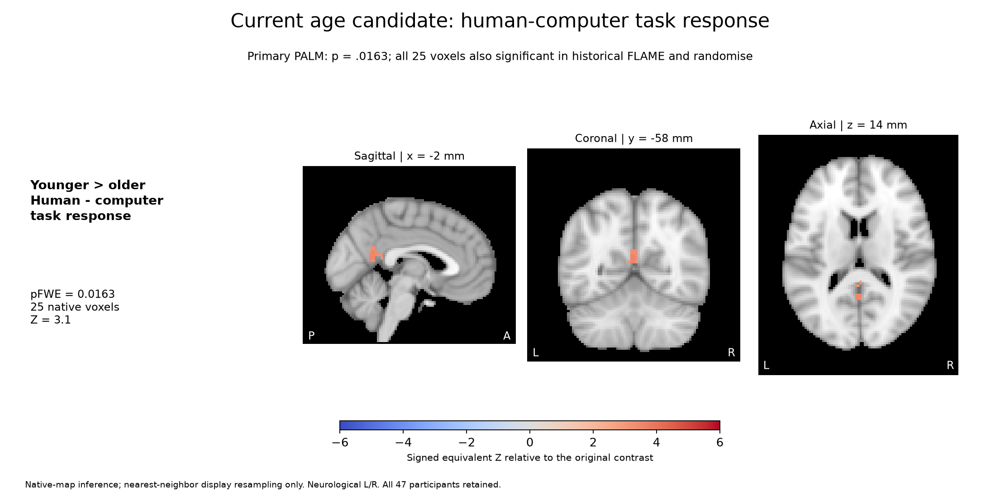
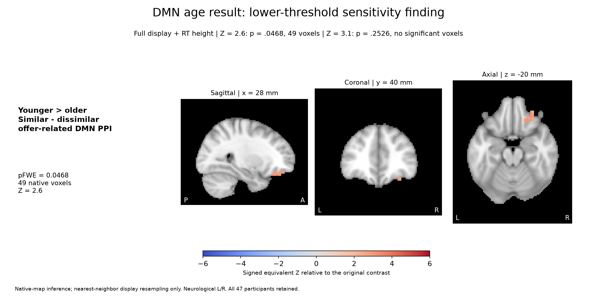
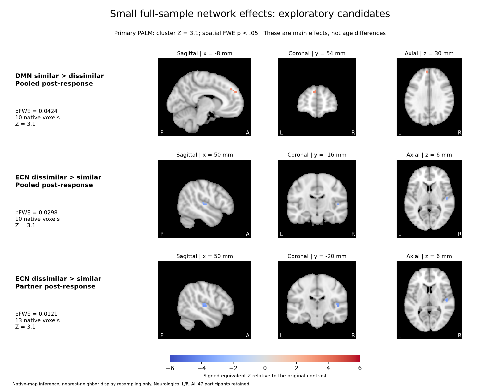

SRNDNA Ultimatum: draft figure review
2 November 2026 | N = 47 | PALM batch complete: 24 jobs, 96 result cells.
Current strongest imaging candidates: full-sample offer-size and human/computer response effects, plus the human/computer task-response age difference. DMN age and small network main effects remain sensitivity findings. No TFCE or vmPFC ROI figures are promoted here.
Draft Figure 1 | Corrected social-choice behavior

Acceptance increased with offer size. The corrected random-intercept/random-offer-slope model converged without singularity. No reliable age or age-by-partner moderation was detected; this does not establish equivalence. Points show observed participant means and SEM, rather than a conditional logistic curve at zero random effects. Similar/dissimilar refer to proposer age relative to the participant. Offer amount also changes the participant's monetary payoff.
Draft Figure 2 | Partner ratings

Humans were rated fairer and more likeable than the computer before and after the task. The corresponding similar-minus-dissimilar comparisons are nonsignificant after BH adjustment. These are ratings in a subsample, not evidence that partner ratings mediate an age effect.
Foundational task effects across the full sample

All three effects survive PALM and overlap the historical FLAME/randomise significant regions. Positive offer-related activity is largely posterior, not an established vmPFC/ventral-striatal fairness effect. Human/computer response effects concern the full task display and do not isolate offer sensitivity.
Current age candidate: human-computer task response

A posterior midline age difference in the human-minus-computer task-response contrast. This is not a fairness-slope age effect. Historical methods use some different covariates/masks. Participant-level bars for this exact new 25-voxel region require a fresh Linux extraction; older-region bars are not relabeled here.
DMN age result: lower-threshold sensitivity finding

The 49-voxel map exactly matches the previous coverage-corrected PALM region. The result does not survive the paper-matched Z = 3.1 threshold under any timing specification and should not be described as a robust primary age effect.
Sensitivity Figure | DMN three-partner bars

The age-gap direction is present before group motion adjustment, but its magnitude increases substantially after adjustment. The apparent crossover corresponds to positive offer-related coupling for younger proposers and negative coupling for older proposers in both participant groups. The computer condition supplies context and is not part of the similar-minus-dissimilar contrast. No new ROI significance test is performed.
Small full-sample network effects: exploratory candidates

Offer-modulated partner differences in network coupling. The two ECN maps overlap in 8 voxels. These effects are absent at Z = 3.1 in the full-RT model. Precise tissue/atlas localization and influence checks remain before interpretation.
Audit Figure | Complete PALM inventory

All planned results are shown, including null findings. The cluster-Z = 3.1 human-computer task-response age contrast is the only primary PALM age finding. The DMN age effect and task-wide offer age effect occur only at the lower cluster threshold. Full-sample network effects depend on timing specification.